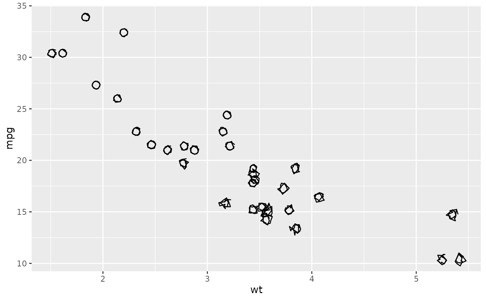
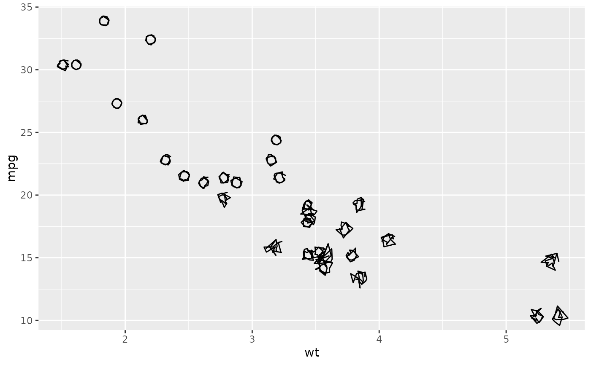

Continuous scale for the sketch roughness aesthetic
Source: R/scale-roughness.R
scale_roughness_continuous.Rdgeom_sketch_point() lets you map a variable to roughness
(aes(roughness = z)). This scale rescales that variable's observed range to a
legible band of roughness values, just as scale_size() rescales to a size
range. It is applied automatically whenever roughness is mapped to a
continuous variable, so you only call it directly to change range. To use
values as raw roughness with no rescaling, wrap them in base::I()
(aes(roughness = I(z))).
Arguments
- ...
Other arguments passed to
ggplot2::continuous_scale().- range
Output roughness range. Default
c(0.01, 0.75):0.01is effectively clean and0.75is clearly hand-drawn without becoming noise. Values above roughly1start to look scribbled.- guide
Legend guide. Defaults to
"none"because the legend keys do not reflect roughness; set to"legend"to show one anyway.
Examples
library(ggplot2)
# Mapped roughness is rescaled to c(0.01, 0.75) automatically.
ggplot(mtcars, aes(wt, mpg, roughness = hp)) +
geom_sketch_point(size = 3, seed = 1L)

# Widen the band so the wobble difference is more dramatic.
ggplot(mtcars, aes(wt, mpg, roughness = hp)) +
geom_sketch_point(size = 3, seed = 1L) +
scale_roughness_continuous(range = c(0, 1.2))
